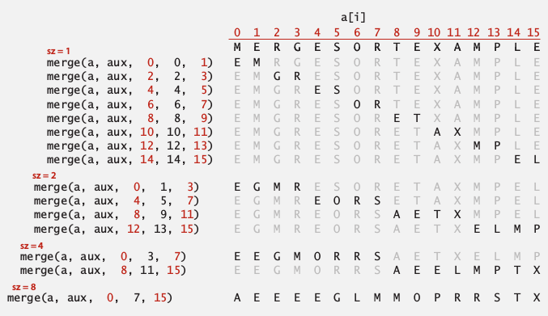
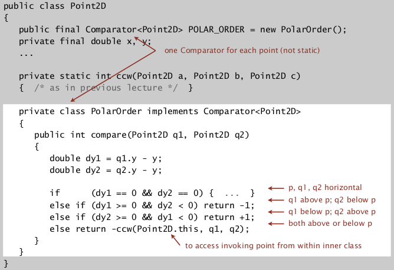

Two classical sorting algorithms: mergesort, quicksort.
1. Mergesort
Divide and conquer: top 10 algorithms of the 20th century, invented by von Neumann.
Idea:
- divide array into 2 halves
- recursively sort each half
- merge two sorted halves
Implementation
Merge:
Goal: a[lo] to a[mid] and a[mid+1] to a[hi] are sorted ⇒ get a[lo] to a[hi] sorted.
→use an auxiliary array to copy data: using 3 indices i,j,k.

private static void merge(Comparable[]a, Comparable[] aux, int hi, int mid, int lo ){ for(int k=lo;k<=hi;k++) aux[k]=a[k]; int i=lo, j=mid+1, k=lo; while(i<=mid && j<=hi){ if(less(aux[j],aux[i])) a[k++] = aux[j++]; else a[k++] = aux[i++]; } while(i<=mid) a[k++] = aux[i++]; while(j<=hi) a[k++] = aux[j++]; }
note: we use if(less(aux[j],aux[i]))instead ofif(less(aux[j],aux[i])), because less(a,b) == true iff a<b (strict), and we want to make mergesort stable. See section (5) below.
Assertion
We can also add assertions: assert isSorted(a, lo, mid); assert isSorted(a,mid+1, hi);
Enable/disable assertion at runtime:
java -ea MyProgram //enable assertion
java -da MyProgram //disable assertion: default
Best practice:
use assertions to check interval invariants;
do NOT use assert for external argument checking !
Mergesort
为了mergesort需要写两个辅助函数: merge和sort(recursive):
public class MergeSort extends AbstractSort{ public static void sort(Comparable[] a){ Comparable[] aux = new Comparable[a.length]; sort(a,aux,0,a.length-1); } private static void sort(Comparable[] a, Comparable[] aux, int lo, int hi){ if(hi<=lo) return; int mid = (hi+lo)/2; sort(a,aux,mid+1,hi); sort(a,aux,lo,mid); merge(a,aux,hi,mid,lo); } private static void merge(Comparable[]a, Comparable[] aux, int hi, int mid, int lo ){ // as before... } }
有几点注意的:
- 注意递归终止条件是
hi<=lo, 不是==. - 实现的代码不难, 但是定义好辅助函数的参数并不简单... 比如在merge里使用了mid作为参数.
- aux的数组直接写在了函数参数里面, 好处是可以防止反复声明数组带来的开销.
- 发现他们写的时候mid都是写成:
mid = lo+(hi-lo)/2, 查了一下发现这样的原因是为了防止hi+lo整数溢出...嗯有道理.
Analysis
proposition (time)
Mergesort takes at most NlgN compares and 6NlgN array access.
Proof.
def: C(N)=#compares for N elements, A(N)=#array access for N elements, the recurrence eq:
C(N) <= 2C(N/2) + N; C(1) = 0 (最多N次比较: 每个a[]的数都由比较得到)
A(N) <= 2A(N/2) + 6N; A(1) = 0 (~~这里不太理解为什么是6N, 怎么数都是4N或者5N啊?......~~2N复制到aux, 2N复制回去, 2N比较)

(上图蓝色的一列是extra cost)
或者用递推公式, 发现D(N)/N的递推关系:

或者用数学归纳法:

Proposition(memory)
Mergesort takes N extra memory.
⇒ mergesort is NOT in-place sorting method.
def. "in-place"
A sorting algo is in-place if it uses <C*lgN extra memory.
ex. insertion sort, shellsort, selection sort...
Practical improvements
- use insertion sort for small arrays:
cutoff to insertion sort for <7 items.

⇒ lead to 20% improvement!
- stop if alread sorted: *a[mid]<a[mid+1]! *

- switch the role of
a[]andaux[]


2. Bottom-up Mergesort
bottom-up version of mergesort without recursion.
Idea:
- pass and merge subarrays of size 1 in pairs
- repeat for subarrays of size 2,4,8,....

implementation
看着上面那个图好写一点... 就是每次用更大的size来两两merge一遍数组
public static void sort(Comparable[] a){ Comparable[] aux = new Comparable[a.length]; for(int sz=1;sz<a.length;sz*=2){ for(int i=0;i<a.length-sz;i+=sz*2) merge( a,aux,i,i+sz-1,Math.min(i+sz*2-1) );//<-注意mid和hi的计算方法 } }
3. Sorting Complexity
some items:
- computational model: allowed operations, (ex. decision tree for compare based sorting).
- cost model: operation counts.
- upper bound: cost guarantee (ex. NlgN for mergesort). .
- lower bound: limit on cost guarantee for all algorithms (no algorithm can do better).
- Optimal algorithm: algo with best cost guarantee. (upper bound=lower bound)
证明lower bound 的方法很有意思:
lower bound for sorting
(binary) decision tree for the case of 3 distinct items:

each possible ordering is a leaf of the decision tree → there are N! possible orderings → tree height should be lg(N!) = NlgN (cf. https://en.wikipedia.org/wiki/Stirling%27s_approximation)
proposition.
Any compare-based sorting algorithm must have at least lg(N!)~NlgN compares in the worst case. (for N distinct keys)
proof.
- binary tree of height h has at most 2^h leaves
- N! possible orderings → at least N! leaves

So, lower bound for sorting = ~NlgN ⇒ mergesort is an asymptotical optimal algorithm. (In terms of time complexity, the shortcoming of mergesort is always the extra space usage)

但是并不是说NlgN是所有排序问题的下界:

4. Comparators
Java mechenism for comparing same data on different ways.
Comparable interface
→Sorting using natural order for a data type.
public class Data implements Comparable
public int compareTo(Date that){
//...}
}
Comparator interface
→Sorting using an alternative order. (total order property is required...)
public interface Comparator<Key>{ int compare(Key v, Key w); }
Comparator can be passed as arguments in java system sort:

Using Comparators in our sorting algos
Use another signature:
- change Comparable to Object
-
add Comparator in arguments
public static void sort(Object[] a, Comparator comparator);
public static boolean less(Comparator c, Object v, Object w);public static void exch(Object[] a, int i, int j);
Implementing a comparator
Add static comparator to a class:
- In the declaration of a class, define an inner class that implements the Comparator interface,
- Then declare an instance of this inner class as a static final variable...
- note: the inner class should be static also.

以上的方法目的是为某个类提供预先定义好的comparator(比如String.CASE_INSENSITIVE_ORDER), 另外也可以直接再声明一个类作为comparator, 然后实例化这个类传进去, 就像之前做过的那样.
Application: Graham scan algo for convex hull

We can get the result of compare by calling ccw(a,b,c) :
*ccw(p,q1,q2)=true ⇔ q2>q1 in terms of polar angle wrt p. (别忘了p是y坐标最小的点, 否则还要讨论角坐标为负数的情况, 见下图). *

5. Stability
Typical application: first sort by student name then by section.
def. :stable"
A stable sort preserves the relative order for items with equal keys.
Insertion sort and mergesort are stable, whereas selection sort and shell sort are not. (And always need to carefully check code: "less than" vs. "less than or equal to").
insertion sort:
stable
proof: we never move equal items pass each other: if(less(a[j], a[j-1])) exch(...)
selection sort:
not stable
counter example:
when exchanging A1 and B1, we move B1 behind B2

shell sort:
counter example: long-dist exchanges

merge sort:
stable
proof: suffices to verify that merge operation is stable, if keys are equal, always take element from left subarray.

Comments !